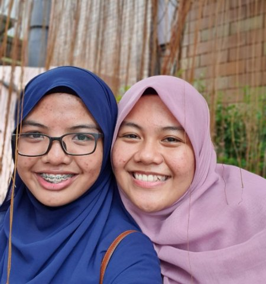
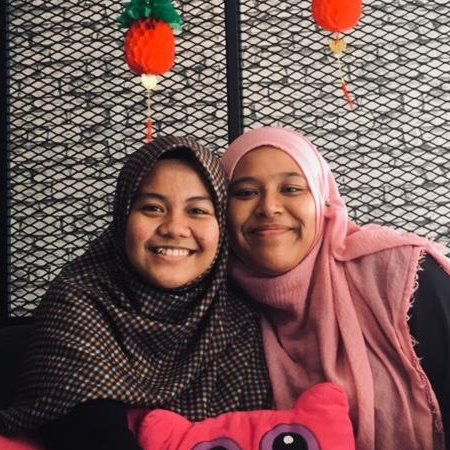
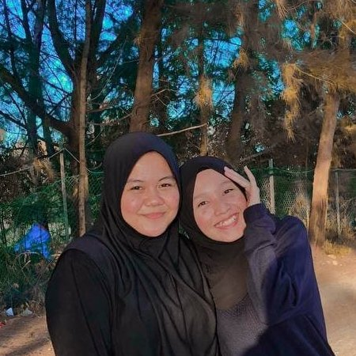
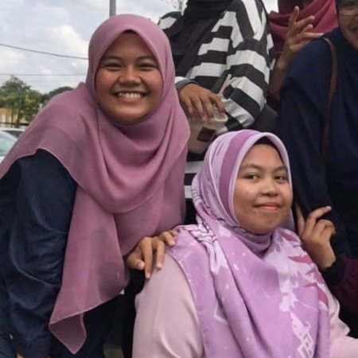
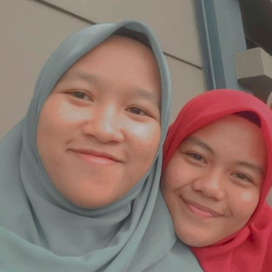
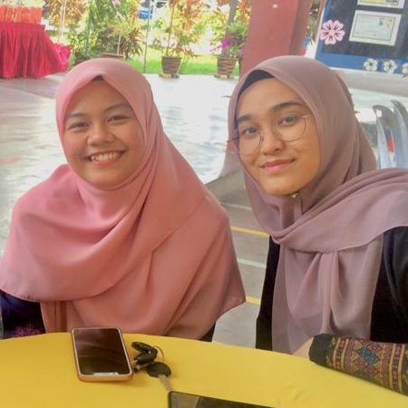

| Picture |
Name |
Hometown |
Reason why I love them |
|  |
Ain Amirah binti Mohamad Nazri |
Teluk Intan |
- She is always there for me when I needed someone.
- She understands me better because she's also the
youngest in her family.
- Somehow I feel connections with her because she have
4 brothers and I have 6 so we are somehow alike.
- Whenever we are together, she is always generous as she
buys me foooooodssss 😋
|
|  |
Noor Aieman Fatihah binti Kamaruddin |
Teluk Intan |
- Always the best person to refer whenever I'm sad.
- She always remind me to remember Allah in whatever situation I'm
in so that I can feel relaxed.
- As she can drive, she always try to make time to meet
me up if I come to Teluk Intan.
- She always find ways to make me closer to Allah ❤
|
| 
| Nur Dini Dhiyana binti Muhd Farizan |
Seri Manjung |
- I swear she is the MOST!!! positive person in the world!!
- The most kindest and warm-hearted person I've ever met!!
- Realllllyyy goooood in cooking and always share foodss!! Also love
to send some foods to my house 😋
- A crybaby 😭 She is almost alike with me in everything and we
usually share so many things together whenever we meet. Not to
forget, we also have the same thing in mind and always react to the
same thing 😂
|
|  |
Nurin Nabilah binti Azhari |
Teluk Intan |
- Kind and is such a caring person because whenever we are together she
always ask about my whereabouts.
- A good cook and always bring some foods whenever we meet ❤
- Definitely a good listener and advisor.
- Wehenever I cried she is the one who wipe my tears or we will cry
together HAHAHAHA.
|
|  |
Nurul Aisyah binti Ahmad Zulfa |
Teluk Intan |
- Kind-hearted but somehow not so kind because she's SOMETIMES negative
HAHAHAHAAHA sorryy but ily hehe.
- Always buys me foods and also give presents for us Jiran Bilik mate
because she appreciate us ❤
- Always plan for trips whenever we are in college because she is
always the mastermind in everything.
- I can say somehow Aisyah is a genius because she is clever HAHA.
|
|  |
Aqilah binti Shaibun |
Penang |
- My roommate since semester 1 until early semester 4.
- My backbone in college when my Jiran Bilik mate is not around.
- Kind and generous back in college because she always ask me if I
want to eat anything and buy foods for me from the night market.
- Always give me advices whenever I was down back in college because
of not so important things but I take it to heart so she avoid me from
overthinks things that I shouldn't.
|